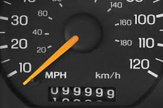
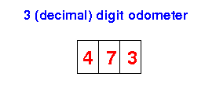
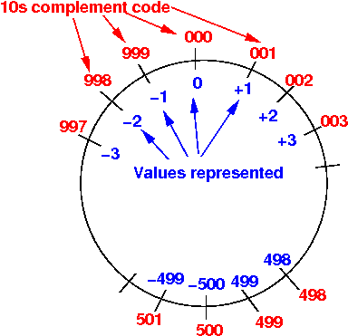
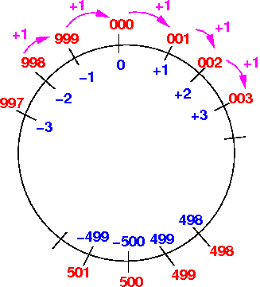
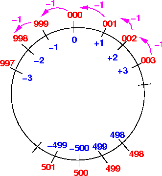

Comment: encoding is like a kind of "secret word" game that kids like to play where they replace one letter by another. For example, one common code used by kids is "+1 psoition", so that B means A, C means B, and so on (A means Z). So a secret massage "Ifmmp" means "Hello".
encode letters in English alphabet using short and long pulses
Example: . . . is S - - - is OTry this Morse code applet: click here
|
The 10s complement code is an Mathematical code:
|
|  |
The odometer in this figure has 6 digits.
Notice that:
|
OK, you may wonder why I talked about an odometer when we were discussing modulo arithmetic.... Just keep the odometer in mind for a while, let's explain modulo arithmetic first....
|
3 * 4 (modulo 9) = 12 (modulo 9) = 3 // 12 - 9 = 3
7 * 4 (modulo 9) = 21 (modulo 9) = 3 // 21 - 9 - 9 = 3
|
In modulo 9 arithmetic, the fixed value used is 9.
After computing the result of some computation, we must reduce the result to a value between 0 .. 8 by subtracting 9 repeatedly until we get a value between 0 .. 8
The odometer in the above figure is using the modulo 1000000 arithmetic:
|
Due to the modulo 1000000 arithmetic, the value 1000000 is equal to 000000 !!!
|
I will use an odometer with 3 (decimal) digits to keep the values small:
|  |
Note:
|
|
Question:
|
Another question:
|
3 digit code: 500 ... 996 997 998 999 000 001 002 003 ... 499 ----------------- +--------+---+---+---+---+---+---+---+---------+ Value represented: ... **** *** ** * * ** *** ... |
Although the above table is the accurate representation of what the 3 digit code really means, it is easier to used western style notation to represent the values.
So we will write the mapping of the 3 digit 10s complement code as follows:
3 digit 10s compl code
(= Odometer reading): 500 ... 996 997 998 999 000 001 002 003 ... 499
----------------- +--------+---+---+---+---+---+---+---+---------+
Value represented: -500 ... -4 -3 -2 -1 0 1 2 3 ... 499
|
Comments:
|
|
Let's learn to do these 2 things first....
Odometer reading: 500 ... 996 997 998 999 000 001 002 003 ... 499 ----------------- +--------+---+---+---+---+---+---+---+---------+ Value represented: -500 ... -4 -3 -2 -1 0 1 2 3 ... 499 |
you can see that:
|
Odometer reading: 500 ... 996 997 998 999 000 001 002 003 ... 499 ----------------- +--------+---+---+---+---+---+---+---+---------+ Value represented: -500 ... -4 -3 -2 -1 0 1 2 3 ... 499 Odometer reading value represented by odometer reading 500 = 1000 - abs(-500) 996 = 1000 - abs(-4) 997 = 1000 - abs(-3) 998 = 1000 - abs(-2) 999 = 1000 - abs(-1) |
you can see that:
|
|
Example:
v = 3 3 digit 10's complement representation: 003 v = 103 3 digit 10's complement representation: 103 v = -3 3 digit 10's complement representation: 1000 - 3 = 997 v = -103 3 digit 10's complement representation: 1000 - 103 = 897 |
Odometer reading: 500 ... 996 997 998 999 000 001 002 003 ... 499 ----------------- +--------+---+---+---+---+---+---+---+---------+ Value represented: -500 ... -4 -3 -2 -1 0 1 2 3 ... 499 |
that:
|
To convert a 3 digit 10's complement code c to its corresponding value
|
Example:
code c = 413 -> it is a positive number the value = 413 code c = 613 -> it is a negative number... the value = - (1000 - 613) = -387 |
3 digit code: 500 ... 996 997 998 999 000 001 002 003 ... 499 ----------------- +--------+---+---+---+---+---+---+---+---------+ Value represented: ... **** *** ** * * ** *** ... |
We use the western representation for the signed values for simplicity:
3 digit 10s compl code
(= Odometer reading): 500 ... 996 997 998 999 000 001 002 003 ... 499
----------------- +--------+---+---+---+---+---+---+---+---------+
Value represented: -500 ... -4 -3 -2 -1 0 1 2 3 ... 499
|
To fully understand the discussion below, try do the following:
|
|
Values 3 digit 10's compl repr
Adding 2
positive 5 005
values + 9 + 009
----- ------
14 014 -> represents 14
Adding
positive + 5 005
negative + -9 + 991
----- ------
-4 996 -> represents -4
Adding
negative + -5 995
positive + 9 + 009
----- ------
4 004 -> represents 4
Adding 2
negative -5 995
values + -9 + 991
----- ------
-14 986 -> represents -14
Values 3 digit 10's compl repr
Subtract 2
positive 5 005
values - 9 - 009
----- ------
-4 996 -> represents -4
Subtract
positive - 5 005
negative - -9 - 991
----- ------
14 014 -> represents 14
Subtract
negative - -5 995
positive - 9 - 009
----- ------
-14 986 -> represents -14
Subtract 2
negative -5 995
values - -9 - 991
----- ------
4 004 -> represents 4
The 3 (decimal) digit 10s complement code uses the modulo 1000 arithmetic.
We can represent the modulo 1000 arithmetic on a circle as follows:
|  |
|  |
|  |
Notice that the value −1 is represented by the code 999.
The reason is:
|
So the 10s complements code uses the modulo arithmetic to obtain the correct representation for arithmetic operations !!!
(Since multiply is repeated addition, it also works !!!)
|
Odometer reading: 500 ... 996 997 998 999 000 001 002 003 ... 499 ----------------- +--------+---+---+---+---+---+---+---+---------+ Value represented: -500 ... -4 -3 -2 -1 0 1 2 3 ... 499 |
Suppose we compute:
Add the values: 499 + 2
In 10s complement code:
499 // repr the value 499
+ 002 // repr the value 2
-----
501 ---> represents the value -499 !
|
|
Longer codes means more data to store and you need more time to perform the computation
That's why the computer provide different length codes to represent integers
But instead of using 10s complement codes, the computer (because it uses binary numbers) uses 2s complement codes
We will study the 2s complement codes next.